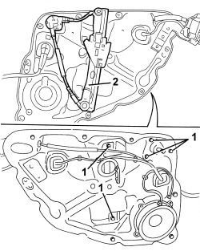

7010D34 REAR SIDE DOOR MANUAL WINDOW MECHANISM (ONE), LEFT OR RIGHT - R.R. WITH DOOR PANEL AND SUPPORT FRAME REMOVED
- Path
- Procedures > 70 FITTINGS > 7010 PASSENGER COMPARTMENT REAR SIDE DOORS > 7010D REAR SIDE DOOR WINDOW GLASSES > 7010D34 REAR SIDE DOOR MANUAL WINDOW MECHANISM (ONE), LEFT OR RIGHT - R.R. WITH DOOR PANEL AND SUPPORT FRAME REMOVED
- Kind
- repair procedure (removal / refitting; the operation number is the code)
- Applies to
- all engines; all production periods
- Interactive page
- https://sloeber94.github.io/elrnDB/#/939011182
Applies to: all engines; all production periods
 Removing
Removing
 Refitting
Refitting- Mark the position of the wind lift mechanism to avoid incorrect refitting.
1. Undo the window opening mechanism fixing bolts.
2. Remove the window opening mechanism.

Applies to: all engines; all production periods
Refitting
Removing- Check that the window opening mechanism is not damaged.
- Position the electric window motor and secure it using the bolts.